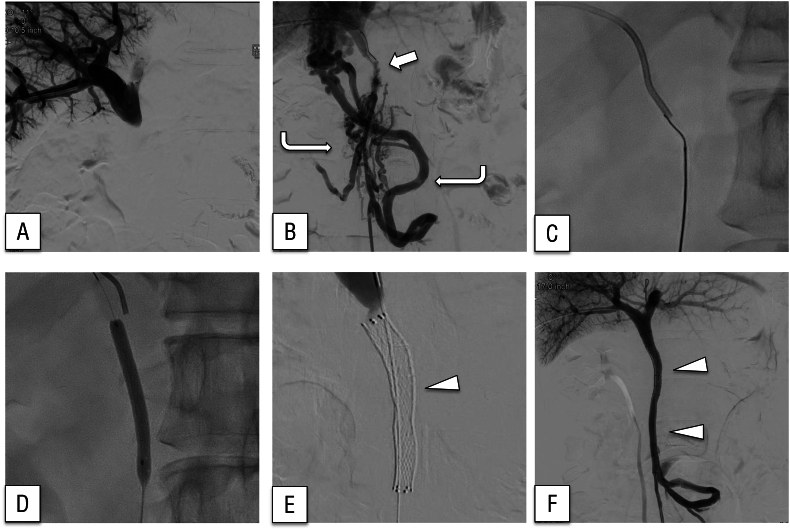
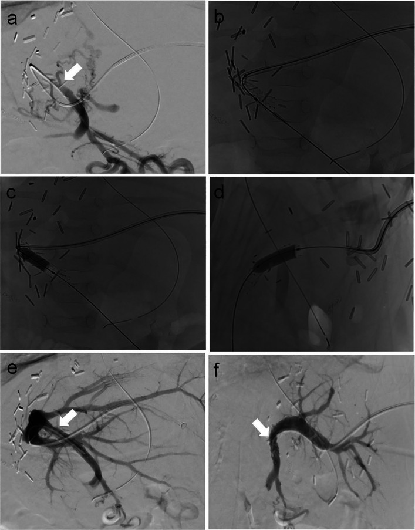
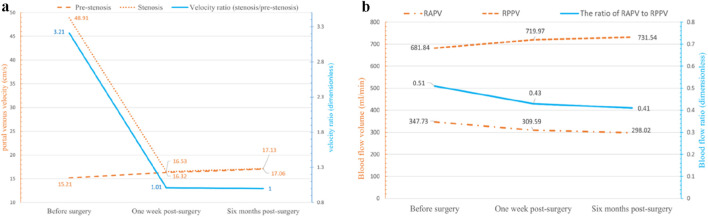
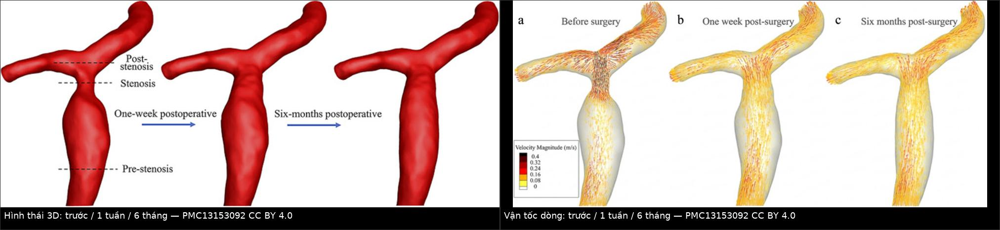
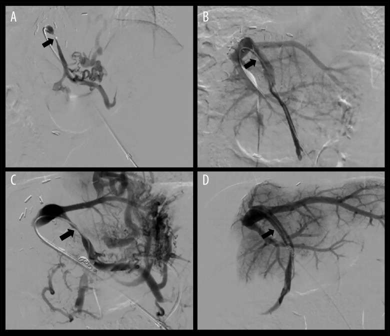

1909 — Hẹp–tắc tĩnh mạch cửa sau ghép gan: tỉ lệ vận tốc 3,21 → 1,01 sau nong bóng, tái hẹp 18,75% & OR 5,7 theo chênh lệch đường kính / Portal vein stenosis after liver transplantation
Tags: pattern:hep-mieng-noi pattern:giai-doan-toc-do pattern:huyet-khoi pattern:giam-ngam-nhu-mo vung:gan vung:tm-cua vung:mieng-noi score:gradient-ap-luc score:ti-le-van-toc protocol:Doppler protocol:CT-3-thi protocol:venography-do-ap-luc protocol:nong-bong protocol:stent
Mức chắc chắn (certainty): tổng hợp y văn (literature synthesis) — số liệu lấy từ 5 bài open access đã đọc toàn văn: Shuai M et al., Ann Transplant 2025 (PMC12377406, CC BY-NC-ND 4.0 — 67 ca hẹp tĩnh mạch cửa ở trẻ sau ghép gan); Hammer S et al., CVIR Endovasc 2025 (PMC12701888, CC BY 4.0 — 31 ca nong bóng, so sánh bệnh–chứng); Iseda N et al., DEN Open 2025 (PMC12621446, CC BY 4.0 — 2 ca hẹp/tắc cửa sau mổ tụy, stent); Yang F et al., Front Bioeng Biotechnol 2026 (PMC13153092, CC BY 4.0 — mô phỏng huyết động CFD trước/sau nong bóng); Tai M et al., BMC Gastroenterol 2026 (PMC13134106, CC BY-NC-ND 4.0 — siêu âm đàn hồi sau ghép gan). Bài không có ca nguyên văn riêng của nhóm; ca trong quiz là ca nguyên văn của nguồn, giữ đúng chú thích gốc và ghi rõ Fig.
Câu hỏi gốc của bài: trẻ 4 tuần sau ghép gan thùy trái, bụng to ra, tiểu ít, tiểu cầu giảm, men gan tăng nhẹ; siêu âm thấy tĩnh mạch cửa giãn trước chỗ hẹp, tại miệng nối tốc độ 52,8 cm/s trong khi đoạn trước chỉ 13,5 cm/s, phổ aliasing; CT thì cửa thấy gan ngấm thuốc không đều, có mạng mạch bàng hệ quanh rốn. Vậy: hẹp ở miệng nối hay do huyết khối? khi nào chỉ theo dõi, khi nào nong bóng, khi nào đặt stent, và con số nào trên phim quyết định? Điểm tựa: gan nhận ~75% máu từ tĩnh mạch cửa, nhưng mảnh ghép chỉ có một cửa vào chính là miệng nối tĩnh mạch cửa. Theo định luật Poiseuille (lưu lượng ∝ ΔP · r⁴ / 8ηL), giảm một nửa bán kính làm lưu lượng giảm 16 lần nếu chênh áp giữ nguyên — nên cơ thể buộc phải tăng tốc dòng để giữ tưới máu. Vì vậy dấu hiệu sớm không phải hình thái hẹp mà là tăng tốc tại chỗ + giãn đoạn trước hẹp; còn chẩn đoán xác định là chênh áp qua chỗ hẹp > 5 mmHg.
1. Tổng quan — vì sao hẹp dòng VÀO gây teo mảnh ghép, giãn tĩnh mạch và "hẹp giả" trên Doppler
A. Bệnh học (pathology) và cơ chế:
- Định nghĩa: hẹp hoặc tắc miệng nối tĩnh mạch cửa (portal vein anastomosis) hoặc thân tĩnh mạch cửa ngoài gan của mảnh ghép sau ghép gan. Đây là mặt đối xứng của 1906: 1906 là bệnh của dòng RA (tĩnh mạch gan → tĩnh mạch chủ dưới), 1909 là bệnh của dòng VÀO (tĩnh mạch mạc treo → tĩnh mạch cửa → xoang gan).
- Nguyên nhân theo thời điểm:
- Sớm (ngày–tuần): kỹ thuật mổ — miệng nối căng (tension), lệch cỡ tĩnh mạch cho–nhận, xoắn/gập cuống mảnh ghép, tắc do huyết khối sau kẹp, dùng mạch ghép cầu nối (interposition graft) bị hẹp lòng.
- Muộn (tháng–năm): tăng sinh nội mạc (intimal hyperplasia) và xơ quanh miệng nối; hẹp tiến triển theo trẻ lớn lên (miệng nối không lớn theo); huyết khối tổ chức hóa.
- Vì sao hẹp dòng vào gây teo mảnh ghép: tưới máu nhu mô tỉ lệ với lưu lượng cửa. Khi hẹp, áp lực tưới máu sau hẹp giảm và dòng chảy thành tia (jet) chỉ nuôi được vùng quanh trục mạch; nhu mô xa trục nhận ít máu → teo vùng (thường phân thùy được nuôi bởi nhánh cửa bị ảnh hưởng), trong khi động mạch gan tăng bù giữ cho phần gần trục không hoại tử. Đây là lý do hình ảnh hay gặp là gan ngấm thuốc không đều theo vùng, chứ không phải ổ hoại tử rõ.
- Vì sao xuất hiện giãn tĩnh mạch và chảy máu tiêu hóa: hẹp cửa làm tăng áp lực hệ cửa → mở tuần hoàn bàng hệ (quanh rốn, giãn tĩnh mạch thực quản/dạ dày). Ca sau mổ tụy trong PMC12621446 là ví dụ cực đoan: tĩnh mạch cửa tắc hoàn toàn → giãn tĩnh mạch lạc chỗ ở miệng nối tụy–ruột (choledochojejunostomy), chảy máu ồ ạt 33 tháng sau mổ, và hết chảy máu sau khi đặt stent tái thông cửa — chứng minh nguyên nhân là huyết động, không phải tổn thương ruột tại chỗ.
- Vì sao đoạn TRƯỚC chỗ hẹp giãn ra: theo định luật Bernoulli, tại chỗ hẹp áp lực tĩnh (static pressure) giảm còn vận tốc tăng; đoạn ngay trước hẹp chịu áp lực cao hơn và dòng xoáy → thành mạch giãn dần theo thời gian. Ca CFD (PMC13153092) cho thấy đoạn trước hẹp 12 mm lúc chẩn đoán, co lại 11 mm sau 6 tháng tái thông — tức giãn là hậu quả huyết động, có thể hồi phục.
- Vì sao Doppler thấy tăng tốc nhưng KHÔNG đủ để chẩn đoán: vận tốc tuyệt đối phụ thuộc góc tới (angle of insonation), cung lượng tim, cỡ mảnh ghép, mức an thần của trẻ. Vì vậy phải dùng tỉ lệ vận tốc chỗ hẹp / đoạn trước hẹp — một đại lượng không thứ nguyên, ít bị ảnh hưởng bởi cung lượng. Ngưỡng thực hành: tăng gấp ~3 lần so với đoạn trước hẹp.
- Vì sao "hẹp giả" (pseudo-stenosis) tồn tại: sau nong bóng, thành mạch co thắt và phù nề có thể làm dòng vẫn nhanh trong 24–72 giờ; ngược lại miệng nối bị gập do tư thế có thể "hẹp" trên một lần đo và hết khi đổi tư thế. Vì vậy chẩn đoán hẹp có ý nghĩa phải đo lại và đo áp lực.
B. Ngưỡng định lượng bắt buộc (cửa 1 Argon):
| Đại lượng | Con số đã kiểm chứng | Ý nghĩa thực hành |
|---|---|---|
| Tần suất hẹp tĩnh mạch cửa sau ghép gan | 2–14% (PMC12377406); loạt đơn trung tâm 67/884 trẻ = 7,58% | Trẻ ghép thùy trái/split và mạch cầu nối có nguy cơ cao nhất |
| Tuổi lúc chẩn đoán (trẻ) | 10,7 ± 16,2 tháng (3–114 tháng) (PMC12377406) | Phần lớn lộ ra trong năm đầu, nhưng hẹp muộn vẫn có |
| Đường kính cửa cho – nhận | nhận 0,41 ± 0,15 cm; cho 0,69 ± 0,23 cm; PVDr 88,5 ± 112,2% (1–792%) (PMC12377406) | Chênh cỡ lớn không tránh được ở trẻ — nên phải đo và ghi lại để tiên lượng |
| Tiêu chuẩn chẩn đoán hẹp | < 3 mm tuyệt đối tại miệng nối HOẶC giảm ≥ 50% đường kính so với cửa ngoài gan phía mạc treo, kèm tăng tốc tới 3 lần đoạn trước hẹp (PMC12377406) | Ba tiêu chuẩn bổ sung nhau, không thay nhau |
| Chênh áp chẩn đoán | > 5 mmHg qua chỗ hẹp (PMC12377406) | Đo bằng catheter trên bàn can thiệp — tiêu chuẩn vàng |
| Thành công kỹ thuật | 95,5%; hiệu quả chung 96,9% (PMC12377406) | Định nghĩa: qua được chỗ hẹp, nong/stent đủ, gradient < 5 mmHg, hẹp tồn dư < 30% |
| Nong bóng đơn thuần thành công | 81,25% (52/64) ngay lần đầu (PMC12377406) | Đa số trẻ chỉ cần nong bóng, không cần stent |
| Tái hẹp sau nong bóng | 18,75% (12/64), trong đó 10 ca can thiệp lại thành công (PMC12377406) | Tái hẹp không đồng nghĩa thất bại — nong lại/stent vẫn cứu được mảnh ghép |
| Yếu tố nguy cơ tái hẹp | PVDr: OR 5,7 (KTC 1,49–21,93; p = 0,01); mạch cầu nối cửa (PVB): OR 2,3 (KTC 0,39–13,67; không có ý nghĩa) (PMC12377406) | Lệch cỡ là yếu tố dự báo mạnh nhất, mạnh hơn cả việc có mạch ghép |
| Mô hình dự báo tái hẹp | AUC 0,778 (KTC 0,596–0,96; p = 0,003); cut-off 0,275; Se 66,7% / Sp 92,3%; độ chính xác 89,1% (PMC12377406) | Dùng để chọn ca cần theo dõi sát, không dùng để bỏ can thiệp |
| Vận tốc trước/sau nong | 52,8 ± 28,7 → 31,1 ± 12,1 cm/s; đường kính 0,21 ± 0,06 → 0,51 ± 0,15 cm (p < 0,001) (PMC12377406) | Đường kính là biến số đáp ứng rõ nhất, vận tốc còn phụ thuộc cung lượng |
| Tỉ lệ vận tốc (ca CFD) | 3,21 → 1,01 sau 1 tuần → 1,0 sau 6 tháng; gradient 1,8 → 0,2 mmHg; WSS đỉnh 30,21 → 0,77 Pa (PMC13153092) | Chứng minh tỉ lệ ≈ 3:1 là ngưỡng thực hành và tái thông bình thường hóa huyết động |
| Cỡ bóng/stent dùng thực tế | bóng 6–8 mm × 20–40 mm; stent tự bung/đặt 10 mm × 25 mm hoặc 8 mm × 40 mm (PMC12377406, PMC12377406 Fig. 4) | Ở trẻ, stent ít dùng vì miệng nối còn lớn theo tuổi |
| Kết cục mảnh ghép sau nong bóng (trẻ < 7 tuổi) | sống mảnh ghép 7 năm 93% (KTC 84–100) so với 88% (80–97) nhóm chứng (p = 0,380); sống bệnh nhân 100% vs 86% (p = 0,034) (PMC12701888) | Nong bóng đưa kết cục về ngang nhóm không hẹp |
| Nhóm chứng âm (tắc cửa mạn không can thiệp) | sống mảnh ghép 7 năm 75% (KTC 50–100) — thấp hơn nhóm can thiệp p = 0,032 (PMC12701888) | Không tái thông = mất mảnh ghép, đây là con số quyết định chỉ định |
| Biến chứng thủ thuật | 1/31 (3%) biến chứng nhẹ; độ thông dài hạn 100% (PMC12701888) | Can thiệp qua da an toàn ở trẻ nhỏ |
| Sống còn sau can thiệp (loạt 67 ca) | bệnh nhân 98,5%, mảnh ghép 92,5%; 1 năm 100%, 3 năm 95% (bệnh nhân) và 91% (mảnh ghép) (PMC12377406) | Tiên lượng tốt nếu chẩn đoán trước khi teo mảnh ghép |
C. TẠI SAO ảnh trông như vậy (vật lý hình ảnh):
- Siêu âm Doppler màu: màu là vận tốc trung bình theo thang đo; khi vận tốc vượt giới hạn Nyquist của thang (thường 30–50 cm/s ở trẻ) → aliasing (đảo màu). Vì vậy aliasing chỉ là dấu hiệu "có tăng tốc", không phải "có hẹp" — phải nâng thang đo và đo phổ để lấy vận tốc thật.
- Phổ Doppler xung: phổ dẹt, tăng vận tốc tâm thu, mất biến thiên theo nhịp thở ở đoạn sau hẹp là hệ quả của mất đàn hồi và tăng sức cản; ngược lại phổ liên tục bình thường của tĩnh mạch cửa (biến thiên nhẹ theo hô hấp) loại trừ hẹp có ý nghĩa.
- CT thì cửa: tín hiệu ∝ nồng độ iod trong nhu mô. Vùng tưới máu kém ngấm ít hơn; vùng tăng tưới máu bù ngấm nhiều hơn → ngấm không đều theo phân thùy. Đây là bất thường tưới máu, nên CT không cản quang bình thường và tổn thương không có bờ hình khối.
- Huyết khối cửa cấp trên CT: không ngấm thuốc trong lòng mạch, tăng đậm độ tự nhiên (40–60 HU) trên phim không cản quang; khác hẹp (lòng mạch còn, chỉ nhỏ lại) và khác huyết khối mạn (canxi hóa, co nhỏ mạch, cavernoma = mạng mạch bàng hệ thay thế).
- Chụp mạch cửa (portography) + đo áp lực: cột cản quang cho thấy hình thái và hướng dòng; nhưng chỉ số áp lực mới là chức năng. Một hẹp 60% mà gradient 2 mmHg là không có ý nghĩa huyết động; một hẹp 40% mà gradient 8 mmHg thì phải can thiệp. Đây là lý do không bao giờ can thiệp chỉ dựa trên hình thái.
- CFD (mô phỏng số): giải Navier–Stokes trên hình học dựng từ CT, đặt điều kiện biên từ Doppler — cho ra vận tốc, áp lực, ứng suất trượt thành mạch (WSS) ở mọi điểm. Trong ca PMC13153092, vận tốc mô phỏng 48,91 cm/s ≈ đo Doppler 51,26 cm/s → mô hình đáng tin; WSS đỉnh 30,21 Pa tại chỗ hẹp so với 0,57 Pa đoạn trước hẹp (tỉ lệ 9,28) giải thích tổn thương nội mạc và tái hẹp.
2. Mẫu hình + chẩn đoán phân biệt theo vị trí (Gamut)
- Hẹp/tắc tại MIỆNG NỐI (anastomotic): hẹp do khâu, lệch cỡ, xoắn — tăng tốc khu trú đúng tại miệng nối, đoạn trước hẹp giãn; hẹp muộn do tăng sinh nội mạc thường dài 3–10 mm, bờ nhẵn, không vôi hóa.
- Tắc do HUYẾT KHỐI (thrombosis): lòng mạch không ngấm thuốc, có thể lan vào nhánh trong gan; cấp thì mạch giãn, mạn thì mạch co nhỏ + cavernoma.
- Hẹp/tắc do NGUYÊN NHÂN NGOÀI (extrinsic): mảnh ghép quá to, máu tụ/tụ dịch quanh miệng nối, quai ruột chèn — hẹp thay đổi theo tư thế, không có tổn thương nội mạc.
- Hẹp do MẠCH GHÉP CẦU NỐI (interposition graft): dùng tĩnh mạch ghép khi khoảng cách cho–nhận quá xa; đoạn ghép bị xơ hẹp theo thời gian, dễ tái hẹp sau nong (OR 2,3 trong PMC12377406, không đạt ý nghĩa).
- Hẹp "giả" sau nong bóng/phù nề: tăng tốc thoáng qua 24–72 giờ, gradient bình thường — theo dõi, không can thiệp lại ngay.
- Bệnh của DÒNG RA (HVOO — bài 1906): cùng bối cảnh "gan ngấm không đều sau ghép" nhưng cơ chế ngược: tĩnh mạch cửa không hẹp, tĩnh mạch gan giãn và đậm hơn IVC, mất sóng ba pha, gradient HV–IVC ≥ 5 mmHg. Đây là cạm bẫy số 1: đọc "ngấm không đều" rồi đi tìm hẹp cửa trong khi bệnh ở dòng ra.
- Tăng áp cửa do xơ gan/tái phát bệnh nền: cửa thông rộng, nhưng có giãn tĩnh mạch, lách to, cổ trướng; không có tăng tốc khu trú.
- Hội chứng tưới máu cửa quá mức (portal hyperperfusion) sau ghép: vận tốc cửa rất cao nhưng đều dọc mạch, không có chỗ hẹp — không nong.
3. Bảng so sánh phân biệt (ma trận đối chiếu)
| Thực thể (entity) | Hình ảnh điển hình (US/CT/DSA) | Chốt vào (rule-in) | Chốt loại (rule-out) | Gợi ý xác nhận |
|---|---|---|---|---|
| Hẹp miệng nối tĩnh mạch cửa | Tăng tốc khu trú đúng miệng nối, tỉ lệ ≥ 3:1; đoạn trước hẹp giãn; CT thì cửa ngấm không đều theo phân thùy | Gradient > 5 mmHg qua chỗ hẹp + hẹp ≥ 50% đường kính | Gradient ≤ 3 mmHg + phổ bình thường đoạn sau → không hẹp có ý nghĩa | Chụp mạch cửa + đo áp lực; nong bóng nếu gradient cao |
| Huyết khối cửa cấp | Lòng mạch không ngấm, 40–60 HU trên phim không cản quang, có thể lan vào nhánh trong gan | Khuyết thuốc trong lòng mạch + không có dòng Doppler | Dòng chảy thấy rõ trong lòng ở mọi thì → không tắc | CTA/CTV 3 thì; Doppler màu; siêu âm cản quang |
| Tắc cửa mạn + cavernoma | Mạng mạch bàng hệ quanh rốn thay thế cửa chính; cửa chính co nhỏ ≤ 3 mm hoặc không thấy | Không thấy tĩnh mạch cửa chính + nhiều mạch bàng hệ + lách to | Thấy cửa chính thông dù nhỏ → không phải cavernoma | CT 3 thì / MRCP; đo áp lực gan–tĩnh mạch |
| Hẹp do tăng sinh nội mạc MUỘN | Hẹp dài 3–10 mm, bờ nhẵn, không vôi, xuất hiện > 3 tháng sau ghép | Tiến triển theo thời gian trên 2 lần chụp + gradient tăng dần | Tổn thương không đổi qua nhiều năm, gradient thấp → theo dõi | So sánh 2 lần Doppler cách 3–6 tháng |
| Tắc do mạch ghép cầu nối | Đoạn mạch ghép xơ, hẹp đều, thường giữa hai miệng nối | Tiền sử dùng mạch ghép + hẹp lan tỏa đoạn ghép | Cửa tự thân thông rộng, không can thiệp mạch ghép | Chụp mạch; thường phải nong lại nhiều lần |
| Hẹp giả sau nong bóng | Tăng tốc thoáng qua, thành mạch phù, gradient thấp | Gradient < 5 mmHg dù hình ảnh còn hẹp | Gradient tăng lại > 5 mmHg sau 72 giờ → tái hẹp thật | Đo lại sau 48–72 giờ trước khi can thiệp lần 2 |
| HVOO (dòng ra — bài 1906) | TM gan giãn, đậm hơn IVC, mất sóng ba pha, cửa bình thường | Gradient HV–IVC ≥ 5 mmHg | Gradient HV–IVC ≤ 3 mmHg + sóng ba pha → loại trừ | Đo áp lực TM gan; CTAP thấy "lỗ kim" dòng ra |
| Tăng áp cửa do bệnh nền | Cửa thông đều, lách to, giãn TM thực quản, không tăng tốc khu trú | Không có chỗ hẹp + bằng chứng xơ gan/tái phát bệnh | Có tăng tốc khu trú ≥ 3:1 → do hẹp cơ học | Sinh thiết gan; đo HVPG |

Ca sau mổ tụy: (A) chụp cửa không thấy tĩnh mạch mạc treo tràng trên vì cửa đã tắc; (B) chụp tĩnh mạch mạc treo: hẹp nặng tại miệng nối (mũi tên) + mạch bàng hệ ngoằn ngoèo vòng qua đoạn tắc (mũi tên cong); (C) dây dẫn qua chỗ tắc; (D) nong bóng; (E–F) đặt stent → dòng cửa phục hồi, mạch bàng hệ biến mất. Nguồn: PMC12621446, CC BY 4.0.Dấu hiệu trên từng modality (đọc theo thứ tự thực hành)
- Siêu âm B-mode: tĩnh mạch cửa < 3 mm tại miệng nối là dấu hiệu muộn, đặc hiệu cao nhưng độ nhạy thấp; giá trị lớn nhất là đo đường kính đoạn trước hẹp và so sánh 2 lần.
- Doppler màu/xung: đo 3 điểm (trước hẹp – tại hẹp – sau hẹp) với góc tới ≤ 60°; ghi vận tốc đỉnh tâm thu (PSV) và tỉ lệ. Tăng tốc ≥ 3 lần là ngưỡng thực hành; aliasing chỉ là gợi ý.
- CT 3 thì: đánh giá nhu mô (ngấm không đều), miệng nối, huyết khối, mạch bàng hệ, biến chứng (hẹp đường mật, áp-xe). Nhiễu kim loại từ clip có thể che miệng nối → dùng MIP/VR và lát mỏng ≤ 1 mm.
- Chụp mạch qua da + đo áp lực: tiêu chuẩn vàng; đo trước và sau nong, đo cả khi có stent (đo trong lòng stent, tránh đầu catheter tựa thành).

Bé trai 5 tháng, 4 tuần sau ghép thùy trái–phải (left lateral split): (a) DSA qua sheath 4F — tắc hoàn toàn tĩnh mạch cửa (mũi tên) với mạch bàng hệ; (b–d) đặt stent Astron 7/20 mm + nong bóng; (e, f) DSA sau can thiệp hai bình diện — hẹp giải quyết hoàn toàn. Nguồn: PMC12701888, CC BY 4.0.4. Protocol chụp + hệ phân độ/điểm chuẩn hóa
- Bước 1 — Siêu âm Doppler (đầu tay, mọi lần theo dõi): nhịn ăn 2–4 giờ nếu có thể; đo đường kính + PSV tại miệng nối, 1 cm trước, 1 cm sau; ghi tỉ lệ, hướng dòng, phổ; đo kích thước gan, lách, dịch ổ bụng. Tần suất: tuần 1, tháng 1, tháng 3, tháng 6, tháng 12, sau đó 6–12 tháng/lần; sớm hơn nếu tiểu cầu giảm, men gan tăng, cổ trướng mới.
- Bước 2 — CT bụng 3 thì (động mạch/cửa/muộn): lát ≤ 1 mm, tái tạo MIP/VR; chỉ định khi siêu âm không kết luận, nghi huyết khối/bàng hệ/biến chứng đường mật, hoặc trước can thiệp.
- Bước 3 — Chụp mạch cửa + đo áp lực (can thiệp trị liệu): đường vào xuyên gan (transhepatic) hoặc qua mạc treo; đo áp lực trước và sau; nong bóng trước, đặt stent nếu hẹp tồn dư > 30% hoặc tái hẹp sớm.
- Chống đông sau can thiệp: heparin trọng lượng phân tử thấp 72 giờ (đích aPTT 1,5–2,5 theo nguồn) rồi warfarin đích INR 1,5–2,0, hoặc rivaroxaban 0,5–1 mg/kg/ngày × 12 tháng (PMC12377406). Theo dõi tiểu cầu, INR, siêu âm lại 1 tuần – 1 tháng – 3 tháng.
- Định nghĩa kết cục (dùng khi báo cáo): thành công kỹ thuật = qua chỗ hẹp + nong/stent đủ + gradient < 5 mmHg + hẹp tồn dư < 30%**; **thành công lâm sàng** = hết cổ trướng/tiểu cầu hồi phục; **tái hẹp** = **gradient tăng lại > 5 mmHg hoặc hẹp > 50% trên chụp lại.
flowchart TD
A[Trẻ sau ghép gan: tiểu cầu giảm, cổ trướng, gan ngấm không đều] --> B[Siêu âm Doppler: đo PSV 3 điểm + đường kính]
B --> C{Tỉ lệ vận tốc >= 3:1 hoặc cửa < 3 mm?}
C -->|Không| D[Theo dõi định kỳ, tìm nguyên nhân khác: HVOO 1906, thải ghép, nhiễm trùng]
C -->|Có| E[CT 3 thì: huyết khối? bàng hệ? biến chứng đường mật?]
E --> F[Chụp mạch cửa + đo gradient]
F --> G{Gradient > 5 mmHg?}
G -->|Không| H[Không can thiệp: hẹp không có ý nghĩa huyết động]
G -->|Có| I[Nong bóng 6-8 mm x 20-40 mm]
I --> J{Hẹp tồn dư > 30% hoặc gradient còn > 5 mmHg?}
J -->|Không| K[Kháng đông + Doppler lại 1 tuần / 1 tháng / 3 tháng]
J -->|Có| L[Đặt stent 8-10 mm]
L --> K
K --> M{Tái hẹp: gradient > 5 mmHg?}
M -->|Có| I
M -->|Không| N[Theo dõi 6-12 tháng/lần tới khi trưởng thành]
5. Biến thể bình thường và cạm bẫy
- Biến thể bình thường:
- Tĩnh mạch cửa nhỏ ở trẻ nhỏ (đường kính 3–4 mm là bình thường ở nhũ nhi) → không chẩn đoán hẹp nếu chỉ dựa vào số tuyệt đối; phải so tỉ lệ và gradient.
- Phổ cửa biến thiên theo nhịp thở và theo nhịp tim ở trẻ lớn — mất biến thiên mới là bất thường.
- Mạch bàng hệ quanh rốn nhỏ sau ghép có thể tồn tại vài tuần rồi tự đóng; chỉ bàng hệ lớn kèm cửa hẹp mới bệnh lý.
- Ngấm thuốc không đều nhẹ ở thì động mạch do dòng cửa chưa ổn định trong 24–72 giờ đầu — đọc lại sau 1 tuần trước khi kết luận.
- Cạm bẫy (pitfall):
- Aliasing = hẹp? Không. Aliasing là giới hạn thang đo; phải nâng PRF và đo phổ. Đã có ca "hẹp" 100% trên màu nhưng gradient 1 mmHg.
- Bỏ sót hẹp vì "cửa còn thấy rõ": hẹp 50% vẫn có thể gradient > 5 mmHg nếu dòng cao; ngược lại hẹp 70% có thể gradient thấp nếu có bàng hệ lớn. → Luôn đo áp lực.
- Nhầm huyết khối mạn + cavernoma với "hẹp dài": cavernoma là mạch bàng hệ, không phải lòng cửa thật; can thiệp vào "mạch bàng hệ" là thất bại chắc chắn.
- Satisfaction of search: thấy hẹp cửa rồi dừng, bỏ hẹp đường mật (thường đi kèm, 15–25% ca ghép trẻ) — luôn đọc đường mật trên cùng phim.
- Đo gradient sai vị trí: đầu catheter tựa vào thành mạch hoặc nằm trong stent cho số giả cao; phải đo ở lòng tự do, hai bên chỗ hẹp, lặp 3 lần.
- Can thiệp quá sớm sau nong: phù nề 24–72 giờ làm hình ảnh còn hẹp; can thiệp lại ngay dễ gây rách thành mạch. Chờ 48–72 giờ, đo lại, rồi quyết định.
- Quên rằng stent ở trẻ sẽ bị "chèn" khi trẻ lớn: stent không lớn theo → có thể phải nong lại trong stent hoặc phẫu thuật lại khi trưởng thành; đây là lý do ưu tiên nong bóng ở trẻ.
6. Tự lượng giá — Blind Quiz ngay trên trang tĩnh
Ca 1 — Bé trai 5 tháng, 4 tuần sau ghép thùy trái; bụng to, tiểu ít. Nhìn hình, mô tả trước khi mở đáp án.
- Gợi ý lâm sàng: tiểu cầu giảm, cổ trướng mới, men gan tăng nhẹ; siêu âm có tăng tốc tại miệng nối.
- Câu hỏi: (1) Hình (a) cho thấy gì? (2) Vì sao có nhiều mạch nhỏ quanh rốn? (3) Sau can thiệp, dấu hiệu nào chứng minh thành công?
Bấm để hiện đáp án (findings + chẩn đoán)
- Findings: (a) DSA qua sheath 4F — tắc hoàn toàn tĩnh mạch cửa (mũi tên) kèm mạch bàng hệ lấp đầy; (b–d) stent Astron 7/20 mm + nong bóng; (e, f) DSA sau can thiệp hai bình diện: hẹp giải quyết hoàn toàn, nhu mô ngấm đều.
- Chẩn đoán: hẹp–tắc miệng nối tĩnh mạch cửa sau ghép gan — tắc tạo tăng áp cửa → mở bàng hệ quanh rốn; tái thông làm bàng hệ mất đi vì áp lực cửa trở về bình thường.
- Vì sao thành công: không chỉ "thấy mạch thông" mà gradient giảm < 5 mmHg và hẹp tồn dư < 30%.
- Nguồn ảnh: Hammer S et al., CVIR Endovasc 2025, Fig. 2, PMC12701888, CC BY 4.0.
Ca 2 — Bệnh nhân sau cắt khối tá tụy, 33 tháng sau xuất hiện chảy máu tiêu hóa ồ ạt; nội soi thấy giãn tĩnh mạch ở miệng nối tụy–ruột.
- Câu hỏi: Vì sao giãn tĩnh mạch lại nằm ở miệng nối mổ chứ không phải thực quản? Can thiệp gì và tại sao nó cắt được chảy máu?
Bấm để hiện đáp án
- Findings: (A) chụp cửa không thấy tĩnh mạch mạc treo tràng trên vì cửa đã tắc; (B) chụp mạc treo: hẹp nặng tại miệng nối + mạch bàng hệ ngoằn ngoèo vòng qua đoạn tắc; (C–D) dây dẫn qua chỗ tắc + nong bóng; (E–F) stent → dòng cửa phục hồi, mạch bàng hệ biến mất.
- Chẩn đoán: hẹp/tắc tĩnh mạch cửa sau mổ gây tăng áp cửa lạc chỗ — giãn tĩnh mạch hình thành tại vùng miệng nối phẫu thuật (nơi mô xơ yếu), chảy máu khi áp lực tăng.
- Vì sao cắt được chảy máu: giải quyết nguyên nhân huyết động (hạ áp cửa) chứ không phải đốt/khâu chỗ chảy máu — đốt tại chỗ sẽ tái phát.
- Nguồn ảnh: Iseda N et al., DEN Open 2025, Fig. 2, PMC12621446, CC BY 4.0.
Ca 3 — Trẻ 8 tháng sau ghép gan, siêu âm: tốc độ tại miệng nối 51,26 cm/s, đoạn trước 13,45 cm/s. Nhìn biểu đồ, tính tỉ lệ và dự đoán sau nong bóng.

- Câu hỏi: (1) Tỉ lệ vận tốc trước nong là bao nhiêu? (2) Sau nong bóng 1 tuần và 6 tháng, tỉ lệ còn bao nhiêu? (3) Vì sao dòng nhánh trước và sau lại đổi phân bố dù tổng lưu lượng gần như không đổi?
Bấm để hiện đáp án
- Tính toán: 51,26 / 13,45 = 3,81 (mô phỏng CFD cho 3,21 vì lấy vận tốc trục); sau 1 tuần 16,53 / 16,32 ≈ 1,01; sau 6 tháng 17,13 / 17,06 ≈ 1,0 — tức giảm ~66,3% tỉ lệ vận tốc.
- Chẩn đoán: hẹp miệng nối có ý nghĩa huyết động (tỉ lệ ≥ 3:1, gradient catheter 1,8 → 0,2 mmHg), được nong bóng thành công.
- Vì sao phân bố đổi: khi hẹp, dòng ưu tiên nhánh có sức cản thấp nhất (nhánh sau 681,84 mL/min so với trước 347,73; tỉ lệ 0,51); sau tái thông, sức cản hai nhánh cân lại → tỉ lệ 0,41 ở 6 tháng. Đây là tái cấu trúc huyết động (hemodynamic remodeling), không phải bệnh mới.
- Ứng dụng: theo dõi tỉ lệ vận tốc và phân bố dòng nhánh có thể phát hiện hẹp sớm trước khi nhu mô teo.
- Nguồn ảnh: Yang F et al., Front Bioeng Biotechnol 2026, Fig. 6, PMC13153092, CC BY 4.0.

Trên: dựng hình 3D từ CT — chỗ hẹp (stenosis) và đoạn trước hẹp giãn 12 mm, co còn 11 mm ở 6 tháng. Dưới: bản đồ vận tốc CFD — tia tốc độ cao tại chỗ hẹp trước nong, mất sau 1 tuần và ổn định ở 6 tháng. Nguồn: PMC13153092, CC BY 4.0; ảnh ghép letterbox, đã thay đổi (ghép + chú thích).
(A, B) Bé 8 tháng sau ghép gan hiến từ người chết vì teo đường mật: hẹp cửa (mũi tên) → chụp cửa sau nong bóng hết hẹp. (C, D) Bé 1 tuổi sau ghép gan hiến sống: hẹp ban đầu → stent 8 mm × 4 cm vì tái hẹp sau nong bóng → hết hẹp. Nguồn: PMC12377406, CC BY-NC-ND 4.0 (nguyên bản, không chỉnh sửa).Bài liên quan chéo
- 1906 – Hẹp dòng ra tĩnh mạch gan sau ghép gan (HVOO) — mặt đối xứng: dòng RA
- 1901 – Hội chứng Budd–Chiari
- 1908 – Thiếu máu mạc treo & bóc tách động mạch tạng
- 124 – Bệnh mạch máu gan — huyết khối cửa, cavernoma
- 176 – TIPS, DIPS: theo dõi shunt
- 1910 – Hội chứng tắc xoang gan (SOS/VOD) — "kẻ bắt chước" không hẹp khu trú
- 100 – Tổng quan hệ Bụng
Ảnh
- Tên file theo quy ước
1909_pvs_Modality_SourceID.jpg; nguồn + giấy phép từng ảnh trongimages/CREDITS.md. - Không có ảnh nào từ Radiopaedia/AuntMinnie trong bài (chỉ dẫn link ở
sources.md).
Không dùng để chẩn đoán độc lập khi chưa có người hướng dẫn.